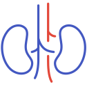

у меня заболевание почек, мне нужны лучшие практики
Что такое хроническая болезнь почек?
Главная задача лечения ХБП - замедлить прогрессирование почечной недостаточности и отсрочить необходимость в проведении гемодиализа. Ключевыми параметрами контроля функции почек является уровень белка в моче (протеинурия), альбумина в моче (альбуминурия) и креатинина в крови, позволяющего рассчитать скорость клубочковой фильтрации по формуле, находящейся в общем доступе.
Для ряда иммуновоспалительных заболеваний почек – гломерулонефритов – важно оценивать активность заболевания. Индикатором того, что терапия является эффективной, будет выход в ремиссию. Напротив, прогрессирование заболевания говорит о том, что проводимое лечение должно быть скорректировано. Пациенту очень важно понимать периоды течения ХБП для того, чтобы иметь возможность адекватно оценивать свое состояние и прогресс заболевания.
-
исчезновение симптомов
заболевания* отсутствие эритроцитов в моче, нормализация артериального давления, альбумина в крови и др.
- уровень белка в моче менее 0,3 г в сутки (что подтверждено двукратно с интервалом в 7 дней)
-
стабильная скорость клубочковой
фильтрации* определяется по уровню креатинина в крови
(далее через звездочку при наведении курсора «определяется по уровню креатинина в крови») - заболевание полностью под контролем
- Симптомы заболевания существенно уменьшаются, но не исчезают полностью
- Белок в моче варьирует на уровне 0,3-3,5 г в сутки или не превышает 50% от показателя до начала лечения (что подтверждено двукратно с интервалом в 7 дней)
-
Стабильная скорость клубочковой
фильтрации* определяется по уровню креатинина в крови
- Отсутствие ответа на проводимое лечение: состояние пациента и показатели в анализах ухудшаются
- Ситуация, когда лечение привело к полной ремиссии, но через некоторое время симптомы заболевания вернулись
Даже если вы вошли в ремиссию, контроль показателей, отражающих
работу почек, обязателен!
Важно:
заведите папку или файл в телефоне/компьютере и сохраняйте все
результаты лабораторных и инструментальных исследований.
- Повышение уровня мочевины и креатинина
- Стойкое снижение СКФ* < 60 мл/мин/1,73 м²
- Нарушение концентрации электролитов кальция, калия, натрия, хлоридов
- Понижение уровня гемоглобина
-
Повышение предельно допустимого количества эритроцитов в
моче* гематурия
, появление эритроцитарных цилиндров -
Повышение предельно допустимого количества лейкоцитов в
моче* лейкоцитурия
-
Появление в мочевом осадке почечного
эпителия* тубулярных клеток
-
Повышение белка в
моче* протеинурия, альбуминурия
- Изменение размера почек, аномалии развития, кисты
- Изменение почечного кровотока
-
Признаки
фиброза* разрастание соединительной ткани
- Изменения в клетках и тканях почки, характерные для каждого конкретного заболевания, относящегося к ХБП
*СКФ – скорость клубочковой фильтрации, рассчитывается по специальной формуле с использованием концентрации креатинина
Подпишитесь на Telegram-канал Помогипочкам.рф, чтобы узнавать о самых новых методах терапии
ПодписатьсяIgA-нефропатия
IgA-нефропатия (болезнь Берже) – это поражение почечных клубочков (гломерулонефрит), возникающее из-за отложения иммуноглобулинов А (IgA) в пространстве между капиллярами с последующим нарушением всех функций почек.
Основные проявления
- Повышение уровня IgA в сыворотки крови
- Гематурия (макрогематурия – примесь крови в моче, видимая глазом; микрогематурия – обнаружение эритроцитов только под микроскопом)
- Протеинурия (повышение белка в моче)
- Артериальная гипертензия (повышение артериального давления)
- Острая почечная недостаточность в сочетании с олигурией (снижение суточного объема мочи менее 500 мл), отеками и артериальной гипертензией
- Хроническая почечная недостаточность (при длительном течении заболевания)

Как и у кого может возникнуть IgA-нефропатия? Какие клинические формы болезни существуют? Как продлить ремиссию?
Узнать подробнееС3-гломерулопатия
С3-гломерулопатия – иммунное поражение почечных клубочков с отложением в них С3 фракции комплекса защитных белков организма – системы комплемента.
Первичная
- Причина не установлена
Вторичная
- инфекций – вирусные гепатиты В и С, ВИЧ, COVID-19, бактериальные, грибковые и паразитарные заболевания;
- аутоиммунных заболеваний соединительной ткани – красная волчанка, ревматоидный артрит;
- моноклональных гаммапатий – заболевания крови, связанные с патологическим синтезом лимфоцитами аномальных иммуноглобулинов.
Возникает следствие:
Особенности развития симптомов, почечные и внепочечные проявления, а также критерии эффективности терапии СЗ-гломеруопатии читайте в статье
Узнать подробнееАтипичный гемолитико-уремический синдром (аГУС)
Атипичный гемолитико-уремический синдром (аГУС) – заболевание, характеризующееся неконтролируемой активацией системы комплемента с тромбозом мелких сосудов по всему организму (тромботическая микроангиопатия).
Триада симптомов
- Снижение тромбоцитов
- Гемолитическая анемия
- Острое повреждение почек
Подробнее о редком (орфанном) заболевании, при котором на первый план выходит поражение не только почек, но и других органов
ПодробнееНЕФРО-ЛИГА - межрегиональная общественная организация нефрологических пациентов.
Здесь Вы найдете информацию о:
- Гемодиализе, перитонеальном диализе и трансплантации почки
- Реабилитации и спортивных возможностях пациентов на диализе и после трансплантации
- Правах пациента и нормативных документах, регламентирующих проведение диализа и трансплантации, оформление инвалидности, лекарственное обеспечение
- Контакты центров диализа и центров трансплантации Российской Федерации
11202106GenMed/Dig/05.24/0